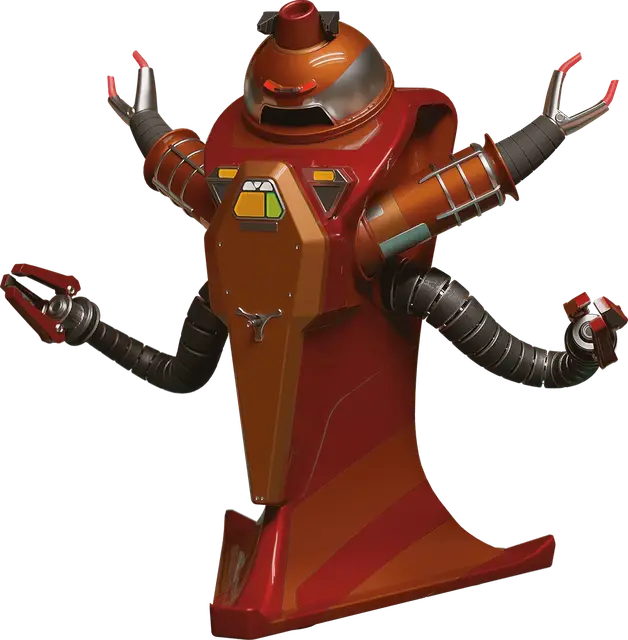

Боевой робот
Combat Robot
Средний Конструкт, законно-нейтральный

Класс Доспеха 15 (природный доспех)
Хиты 112 (15к8 + 45)
Скорость 40 футов
| мод | спас | ||
|---|---|---|---|
| СИЛ | 20 | +5 | +5 |
| ЛОВ | 14 | +2 | +2 |
| ТЕЛ | 17 | +3 | +6 |
| мод | спас | ||
|---|---|---|---|
| ИНТ | 10 | +0 | +0 |
| МДР | 15 | +2 | +2 |
| ХАР | 10 | +0 | +3 |
Навыки Атлетика +8, Восприятие +5, Запугивание +6
Сопротивление урону кислота, огонь
Иммунитет к урону холод, яд
Иммунитет к состояниям истощение, отравление
Чувства тёмное зрение 120 футов, пассивное Восприятие 15
Языки Общий плюс языки на которых говорит его создатель
Опасность 6 (2300 опыта)
Бонус мастерства +3
Особенности
Перегрузка электричеством. Когда робот получает урон электричеством, он должен преуспеть в спасброске Телосложения Сл 10, иначе станет ошеломленным до начала своего следующего хода.
Действия
Мультиатака. Робот совершает две атаки Щупальцем или три атаки Лучом лазера.
Щупальце. . Рукопашная атака оружием: +8 к попаданию, досягаемость 10 фт., одна цель. Попадание: 10 (1к10 + 5) дробящего урона. Если цель — существо Среднего размера или меньше, то оно становится схваченным (Сл высвобождения 16). Пока цель схваченна подобным образом, она также опутана. У робота есть два щупальца, каждое из которых может держать в захвате по одной цели за раз.
Луч лазера. . Дальнобойная атака оружием: +5 к попаданию, дистанция 120 фт., одна цель. Попадание: 16 (4к6 + 2) урона излучением.
Гранатомет (перезарядка 5–6). Робот выстреливает гранату в видимую им в пределах 120 футов точку пространства. Граната взрывается сферой радиусом в 20 футов с центром в этой точке, создавая один из указанных ниже эффектов (по выбору робота):
• Оглушающая граната. Каждое существо в области сферы должно совершить спасбросок Ловкости Сл 15, получая 21 (6к6) урона силовым полем при провале и половину урона при успехе.
• Усыпляющая граната. Каждое существо в области сферы должно преуспеть в спасброске Телосложения Сл 15 или упадёт без сознания на 1 час. Состояние заканчивается для существа раньше, если оно получает урон или если другое существо потратит Действие, чтобы привести его в сознание.
Бонусные действия
Аварийное ускорение (2/день). Робот совершает действие Рывок или Отход.
Описание
Роботы являются Конструктами, созданными для тяжелого труда, повседневных задач и караульной службы. Несмотря на прочную конструкцию роботов, их схемы подвержены перегрузкам при воздействии сильных токов электричества.
У робота есть пара маленьких щупов для мелкой моторики и манипулирования предметами, а также два большие конечности, специализированных под конкретную роль. Роботы запрограммированы на рассудительность, понимание и, как правило, преданность своим создателям. Несмотря на это, некоторые из долго существующих роботов развивают свои собственные личности и разум.
Роботы, которые долгое время находятся в изоляции, подвергаются плохому обращению или небрежному отношению, склонны к сбоям в работе. Некоторые роботы впадают в уныние или становятся жестокими, другие навязчиво повторяют последнее указание или преследуют новые, особые цели.
Боевой робот
Боевые роботы созданы для выполнения охранных и военных ролей. Из них выходят отличные стражи, которые обычно запрограммированы на то, чтобы брать нарушителей в плен, прежде чем прибегать к летальному исходу. Боевые роботы оповещают о преследовании встроенными сиренами и мигающими лампочками, предупреждая близлежащих существ о своем скором появлении с помощью устрашающей внешности.
Боевые роботы оснащаются широким спектром голосов. Некоторые специально создаются устрашающими, в то время как другие могут произносить заготовленные банальные фразы в приятных тонах, даже во время задержания противников.